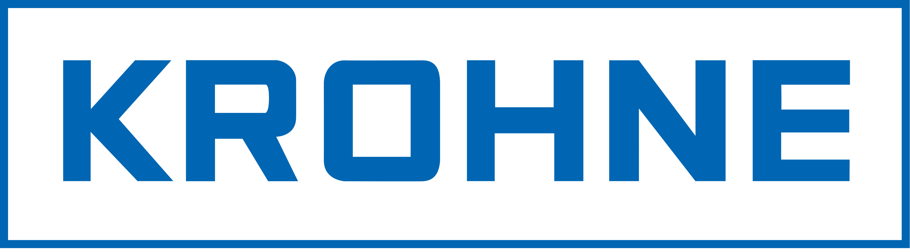

Flow measurement · Process instrumentation
KROHNE Since 1921 · Germany
Founded in Duisburg, Germany in 1921, KROHNE is a family-owned manufacturer of process instrumentation, with more than 4,000 employees and local support in over 100 countries. Its flow, level, pressure, temperature and analytics instruments are used across oil & gas, chemical, power and water applications. ITS works closely with KROHNE on oil & gas projects in Thailand, from meter selection and system engineering through installation and commissioning.
Custody transfer flow metering
Ultrasonic & Coriolis flowmeters
Level & pressure
Process analytics
Oil & gas
LNG
Power